Physical pack: plans for every template not done yet
Rough plans, not art: real images, a footage still where your clip goes, one panel per beat. marks words the buyer edits.
Tick Approve or Maybe and leave notes; they save as you type (or use Copy all notes). Click a panel to see it big.
#04 A or B?
Job: two versions (colours, scents, sizes): get viewers to pick and comment · World: the record shop: two real vinyl records (Side A, Side B), her cobalt/mustard stripes, kraft sleeve · Moves: record as a spinning window, two-tone strip slice between A and B, flip
0-2s · Hook: both, side by side
Background: cobalt stripes top, mustard stripes bottom (two materials, one per version)
Footage goes: two round windows: the centre labels of two real records, version A left, B right
Main action: both records spin in from the edges and lock side by side
Doodles: her arrows point from A and from B up to the question
Carried on: the two records
Transition out: A slides up and fills the frame
Text: WHICH ONE ARE YOU? (built-in); A (built-in); B (built-in)
2-5s · Side A
Background: cobalt stripes
Footage goes: version A full frame (the record label opened up)
Main action: the record keeps turning slowly in the corner like a dial
Doodles: her circle round the A sticker
Carried on: the small record in the corner
Transition out: two-tone strip slice (cobalt / mustard) to Side B
Text: A (built-in); A: [NAME + ONE WORD] (editable)
4.8-5.2s · Strip slice
Background: A cut into strips tinted cobalt and mustard
Footage goes: B underneath, showing through the gaps
Main action: the strips slide apart left and right
Carried on: the corner record
Transition out: B is full frame
5-8s · Side B
Background: mustard stripes
Footage goes: version B full frame
Main action: the corner record flips over (now Side B)
Doodles: her circle round the B sticker; her dashed arrow at the product
Carried on: the corner record
Transition out: both shrink back into the two records
Text: B (built-in); B: [NAME + ONE WORD] (editable)
10-12s · CTA: pick one
Background: cobalt over mustard stripes
Footage goes: both records again, A and B playing in the labels; your hand picking one
Main action: the records spin; your pick pops bigger
Doodles: her ticks pop by each record as people vote
Transition out: end
Text: COMMENT A OR B (built-in); BOTH AT [SHOP] (editable)
#05 Details you'd miss in a photo
Job: show the quality only a close look reveals · World: the jeweller's bench: dark walnut, brass loupe, gold wire glasses, tweezers, her cream dots on deep navy · Moves: lens window (loupe), glasses with a detail in each lens, colour inside / greyscale outside
0-2.5s · Hook: the loupe finds detail 1
Background: detail 1 full frame in GREYSCALE
Footage goes: a sharp, colour circle inside the real brass loupe
Main action: the loupe slides in over the product
Doodles: her burst on the loupe as it lands
Carried on: the loupe
Transition out: the loupe glides to the next spot
Text: DETAILS YOU'D (built-in); MISS IN A PHOTO (built-in)
2.5-5s · Detail 2
Background: greyscale outside
Footage goes: colour inside the loupe, now on detail 2
Main action: the loupe glides from detail 1 to detail 2
Doodles: her arrow at the detail
Carried on: the loupe
Transition out: the loupe lens grows to full frame
Text: [HAND-STITCHED EDGES] (editable)
5-8s · Details 3 + 4: the glasses
Background: deep navy with her cream dots
Footage goes: detail 3 and detail 4 in the two lenses of real gold wire glasses
Main action: the glasses settle onto the frame, one lens then the other fills
Doodles: her underlines under each line
Carried on: the glasses
Transition out: the right lens expands to full frame
Text: [LABEL] (editable); [FINISH] (editable)
8-10s · Detail 4 close
Footage goes: detail 4 full frame
Main action: tweezers lift in from the side and point at the detail
Doodles: her circle round the spot
Carried on: the tweezers
Transition out: zoom out through the loupe
Text: [GLAZED BY HAND] (editable)
10-12s · CTA: pulled back
Background: navy dots, the walnut bench as a band
Footage goes: the whole product inside the loupe, pulled back
Main action: the loupe lifts away revealing it all
Job: show the making, so the price makes sense · World: the workshop: worn wood bench, kraft paper roll, jute twine, ticket stubs for each step, the rubber stamp · Moves: torn reveal (kraft paper tears to each step), twine timeline carried across, stamp DONE
0-2s · Hook: raw materials
Background: worn wood bench
Footage goes: the raw-materials clip in a torn opening in kraft paper
Main action: the kraft paper tears open from the middle
Doodles: her dashed arrow from the words into the tear
Carried on: the twine line across the top
Transition out: the next tear
Text: MAKING ONE (built-in); [PRODUCT] (editable)
2-5s · Step 1
Footage goes: step 1 full frame
Main action: a ticket stub drops onto the twine line and swings
Doodles: her circle round the step number
Carried on: the twine line + ticket 1
Transition out: kraft paper tears across to step 2
Text: STEP 1: [WHAT] (editable)
5-8s · Step 2 (the tear)
Background: kraft paper half torn away
Footage goes: step 2 behind the tear
Main action: the tear runs down the frame
Carried on: twine + tickets 1 and 2
Transition out: tear to step 3
Text: STEP 2: [WHAT] (editable)
8-11s · Step 3
Footage goes: step 3 full frame (sped up)
Main action: ticket 3 joins the line
Doodles: her underline under the step
Carried on: twine + three tickets
Transition out: the stamp comes down
Text: STEP 3: [WHAT] (editable)
11-13s · Done: the stamp
Background: wood bench
Footage goes: the finished product in a photo card
Main action: the real rubber stamp stamps DONE
Doodles: her burst on DONE
Carried on: the stamp
Transition out: the card grows to the CTA
Text: DONE (built-in)
13-15s · CTA
Background: wood + kraft band
Footage goes: the product in use full frame
Main action: the three tickets fan in along the bottom
Transition out: end
Text: MADE BY HAND IN [TOWN] (editable); COMMENT "[KEYWORD]" (built-in)
#07 How big is it really? (fresh take)
Job: answer the size question before people ask · World: the measuring wall: a giant wooden ruler, white pegboard, everyday things for scale (mug, playing card, cassette, phone) · Moves: the ruler as a sliding divider (carries the next clip in), a line-up for scale, surreal scale
0-2s · Hook: the ruler
Background: white pegboard
Footage goes: the product clip in a tall window beside a giant ruler
Main action: the giant real ruler slides up beside the clip, ticking up
Doodles: her ? beside the hook; her arrow from the ruler to the product
Carried on: the ruler
Transition out: the ruler slides across, carrying clip 2 in behind it
Text: HOW BIG IS IT (built-in); REALLY? (built-in)
2-4s · In my hand
Footage goes: clip 2 full frame
Main action: the ruler slides across as the divider, clip 2 coming in behind it
Carried on: the ruler (now on the right edge)
Transition out: line-up
Text: IN MY HAND (editable)
4-6s · Next to things you own
Background: pegboard
Footage goes: clip 3 in a window the size the product really is
Main action: a line-up drops in: a mug, a playing card, a cassette
Doodles: her labels with arrows to each thing
Carried on: the ruler
Transition out: the clip grows
Text: NEXT TO A [MUG] (editable)
6-8s · Worn / on a shelf
Footage goes: clip 4 full frame
Main action: a real phone slides in at true scale beside it (surreal scale check)
Doodles: her circle round the product
Carried on: the phone
Transition out: the ruler swings down horizontal
Text: [ON THE SHELF] (editable)
8-10s · CTA: the exact size
Background: pegboard + mustard stripes band
Footage goes: the product on the ruler, full frame clip in a wide window
Main action: the size number pops on a real paint chip
Job: answer the question everyone DMs, once, publicly · World: the switchboard: a dusty-blue rotary phone, kraft padded mailers, a mailbox with the flag up, her speech bubbles · Moves: a speech bubble as the window, the rotary phone ringing, mail floods then clears
0-3s · Hook: the question rings in
Background: dusty blue + her cream wavy lines
Footage goes: the customer's question (their screenshot) inside her speech bubble
Main action: the real rotary phone rings (shakes), the bubble pops out of the handset
Doodles: her burst lines on the ringing phone
Carried on: the speech bubble
Transition out: the bubble grows into the answer clip
Text: YOU ASKED: (built-in)
3-7s · Answer, part 1
Footage goes: answer clip 1 full frame
Main action: the bubble shrinks to the corner and stays
Doodles: her arrow at the product
Carried on: the bubble in the corner
Transition out: mail floods across
Text: [THE ANSWER, LINE ONE] (editable)
6.8-7.2s · Mail flood
Background: kraft padded mailers pile in from every side
Footage goes: clip 2 under the pile
Main action: the mailers flood, then fly off
Carried on: one mailer stays in the corner
Transition out: clip 2 full
7-11s · Answer, part 2
Footage goes: answer clip 2 full frame
Main action: one mailer sits in the corner (the reply)
Doodles: her underline under the line; her tick
Carried on: the mailer
Transition out: the mailbox flag drops
Text: [THE ANSWER, LINE TWO] (editable)
11-15s · CTA: in use
Background: dusty blue wavy lines band
Footage goes: the product in use in a photo card
Main action: the mailbox flag drops (answered)
Transition out: end
Text: MORE QUESTIONS? (built-in); COMMENT "[KEYWORD]" (built-in)
#09 Who it's for
Job: make the right buyer say "that's me" · World: the name-tag party: blank HELLO name-tag stickers (green and red borders), a lanyard badge holder, a cone party hat, a disco ball · Moves: name tags as windows, disco-ball sparkle swarm orbiting, badge swing as the change
0-2s · Hook: if you...
Background: red gingham-style checks (her checkerboard in red)
Footage goes: the product clip inside a real HELLO name tag
Main action: the name tag slaps onto the frame and wobbles
Doodles: her underline under the habit; her sparkles
Carried on: the tag
Transition out: the tag flips to person one
Text: IF YOU [HABIT], (editable); THIS IS FOR YOU (built-in)
2-5s · Type one
Footage goes: moment one full frame
Main action: the badge holder swings in on its lanyard with the type written on it
Doodles: her arrow at the hands
Carried on: the lanyard
Transition out: the badge swings out, the next swings in
Text: FOR THE [6AM COFFEE CROWD] (editable)
5-8s · Type two: the disco ball
Footage goes: moment two full frame
Main action: a real disco ball drops in on a string; her sparkles orbit the product (swarm)
Doodles: her sparkles circling
Carried on: the disco ball
Transition out: the ball swings across as the wipe
Text: FOR THE [TYPE TWO] (editable)
8-10s · Type three
Footage goes: moment three full frame
Main action: the party hat lands on the corner of the frame
Doodles: her crown doodle over the product
Carried on: the hat
Transition out: tags flood to the CTA
Text: FOR THE [TYPE THREE] (editable)
10-12s · CTA: sound like you?
Background: red checks
Footage goes: the product on its own inside the green name tag
Main action: three tags stack up, the last one is yours
Transition out: end
Text: SOUND LIKE YOU? (built-in); COMMENT "[KEYWORD]" (built-in)
#10 Three people to gift it to
Job: turn one product into three gift ideas · World: the wrapping table: kraft paper, jute twine, three real gift tags (cream, blue scalloped, kraft), a kraft cube gift; her stripes in cobalt · Moves: gift tags as windows (dive into the tag), torn kraft wrap, tags orbit the gift at the end
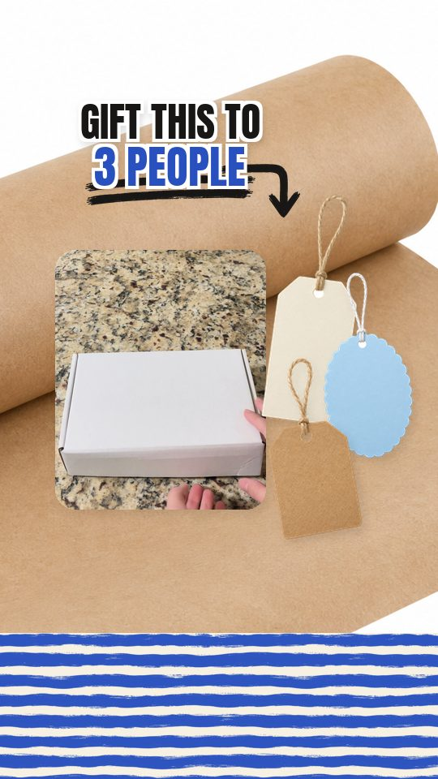
0-2s · Hook: three tags drop in
Background: kraft paper + a band of her cobalt stripes
Footage goes: the gift-ready clip in a photo card
Main action: three real gift tags drop in on twine and swing
Doodles: her arrow from "3" to the tags; her underline
Carried on: the tags on the twine
Transition out: the camera dives into tag 1
Text: GIFT THIS TO (built-in); 3 PEOPLE (built-in)
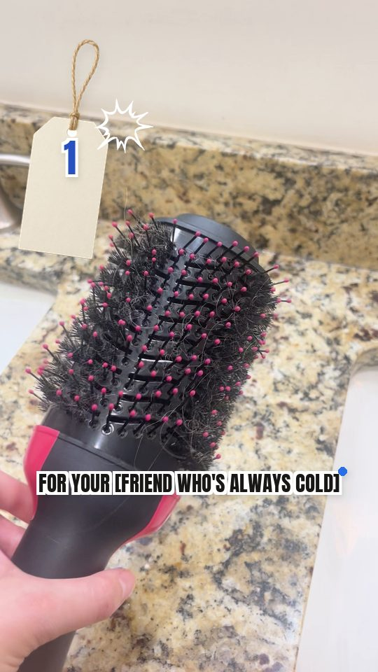
2-4.5s · Person 1, inside the tag
Footage goes: person one plays inside the cream tag, which grows until it fills the frame
Main action: the tag grows (dive)
Doodles: her burst on "1"
Carried on: the twine across the top
Transition out: kraft wrap covers the screen and tears open
Text: 1 (built-in); FOR YOUR [FRIEND WHO'S ALWAYS COLD] (editable)
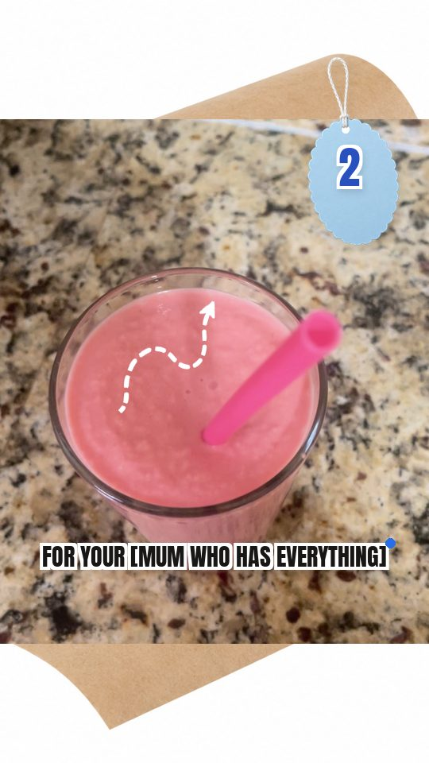
4.5-7s · Person 2: the wrap tears
Background: kraft paper half torn
Footage goes: person two behind the tear
Main action: the kraft wrap tears open
Doodles: her dashed arrow at the product
Carried on: the blue tag swings in the corner
Transition out: strip slice (kraft / cobalt) to person three
Text: 2 (built-in); FOR YOUR [MUM WHO HAS EVERYTHING] (editable)
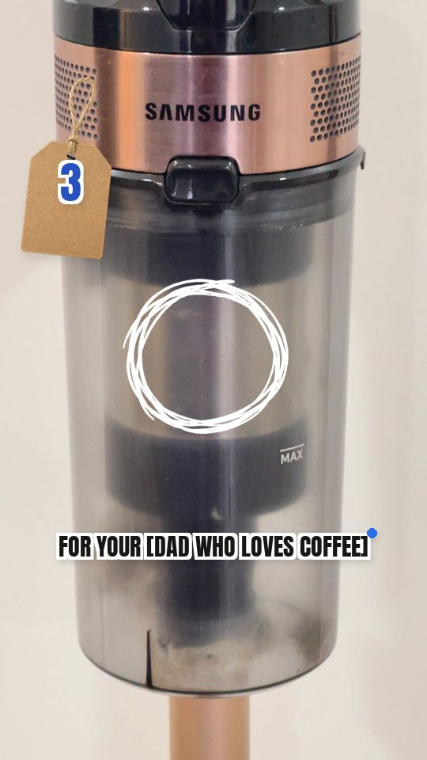
7-9.5s · Person 3
Footage goes: person three full frame
Main action: the kraft tag lands on the corner
Doodles: her circle round the product
Carried on: all three tags gather
Transition out: the gift pops in
Text: 3 (built-in); FOR YOUR [DAD WHO LOVES COFFEE] (editable)
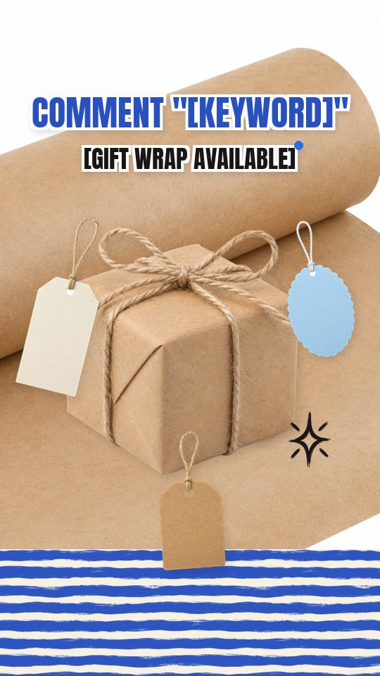
9.5-12s · CTA: tags orbit the gift
Background: kraft + cobalt stripes
Footage goes: the gift-wrap clip inside the real kraft cube gift
Main action: the three tags orbit the gift (swarm)
Job: show it fits into a whole day · World: the clock of the day: the brass clock as four wedges of footage, the clock-tower crown as a divider, one alarm clock, a French press, a lava lamp; concrete grey + black/white type · Moves: radial wedge expands into the next scene, the hour hand carried across, the clock tower rising as a divider
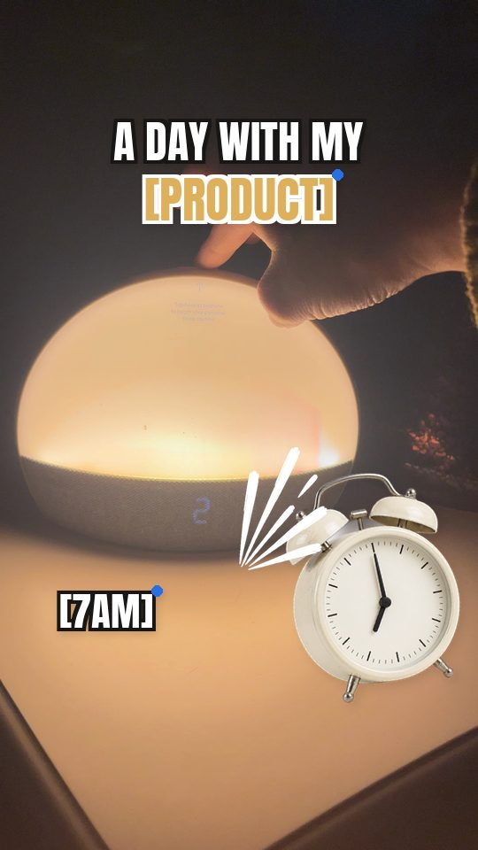
0-2s · Hook: 7am
Background: concrete grey
Footage goes: morning clip full frame
Main action: the real alarm clock rings (shakes) in the corner
Doodles: her burst lines on the bells
Carried on: the hour hand (small, top right)
Transition out: zoom out to the clock
Text: A DAY WITH MY (built-in); [PRODUCT] (editable); [7AM] (editable)
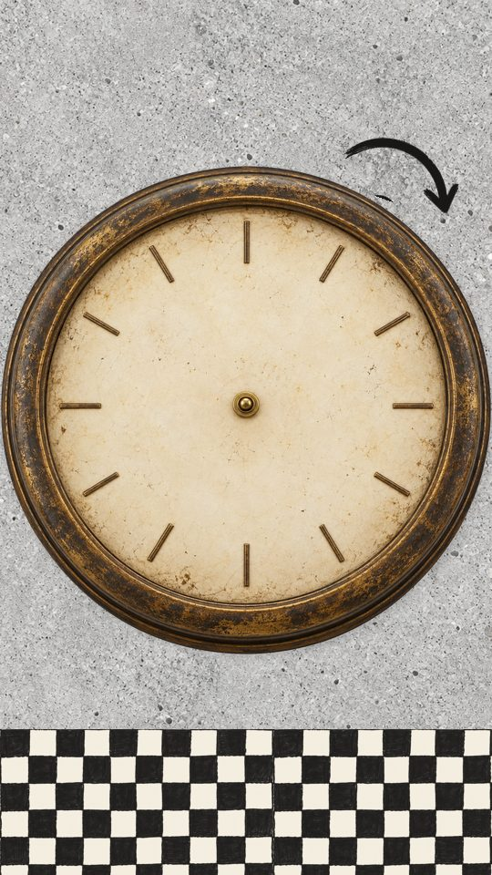
2-3.5s · The clock of four clips
Background: concrete grey + her black checks band
Footage goes: four wedges of the brass clock, a clip in each
Main action: the hour hand sweeps from 7 to 12
Doodles: her curved arrow round the rim
Carried on: the clock
Transition out: the 12 wedge expands to full frame
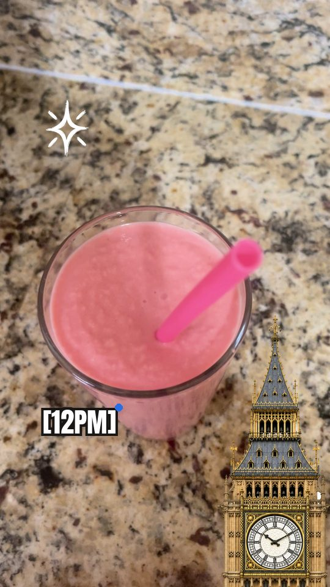
3.5-6s · Midday
Footage goes: midday clip full frame
Main action: the clock-tower crown rises from the bottom as a divider
Doodles: her sparkle
Carried on: the tower crown
Transition out: the wedge for 4pm expands
Text: [12PM] (editable)
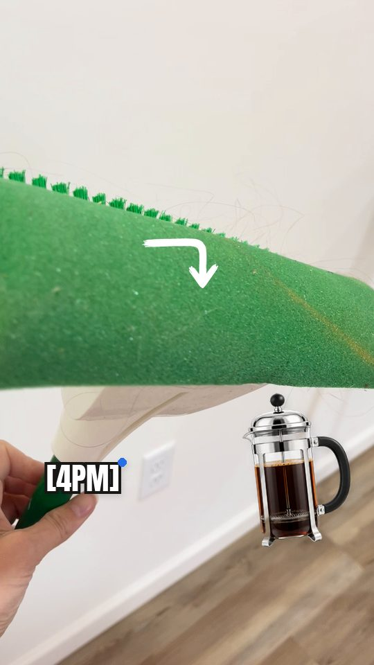
6-9s · Afternoon
Footage goes: afternoon clip full frame
Main action: the hand points at 4; a real French press slides in
Doodles: her arrow at the product
Carried on: the hour hand
Transition out: the clock wheel turns to night
Text: [4PM] (editable)
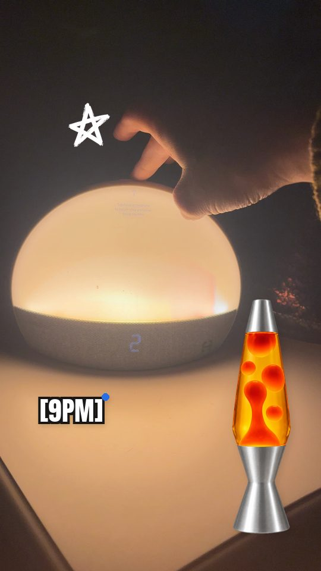
9-12s · Night
Background: concrete toned near-black
Footage goes: night clip full frame
Main action: a real lava lamp glows in the corner
Doodles: her stars
Carried on: the hour hand at 9
Transition out: the clock returns
Text: [9PM] (editable)
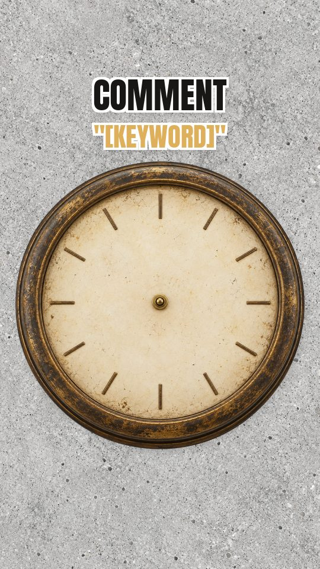
12-15s · CTA: resting in the clock face
Background: dark concrete
Footage goes: the product resting inside the whole clock face
Main action: the hands meet at 12
Transition out: end
Text: COMMENT (built-in); "[KEYWORD]" (built-in)
#12 Your order just arrived
Job: make the unboxing feel like a gift · World: the front door: a brass doorbell, a coir doormat, kraft padded mailers, a walnut rabbit-ear TV · Moves: doorbell press shakes the frame, mailer tears open (torn reveal), the clip lives in the TV screen (POV)
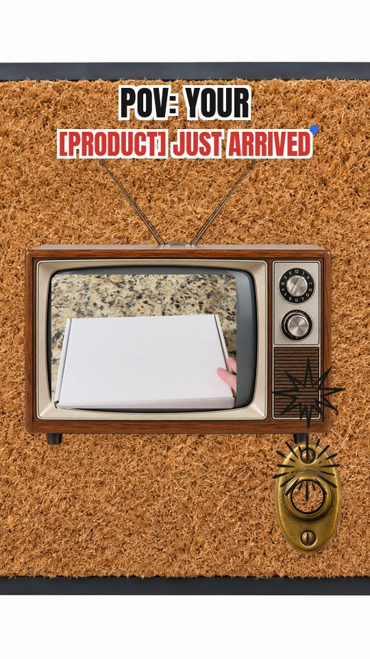
0-2s · Hook: ding dong
Background: coir doormat
Footage goes: the package-on-the-doorstep clip inside the real walnut TV (POV)
Main action: a finger-press on the real brass doorbell shakes the frame
Doodles: her burst on the bell
Carried on: the TV
Transition out: the camera pushes into the TV screen
Text: POV: YOUR (built-in); [PRODUCT] JUST ARRIVED (editable)
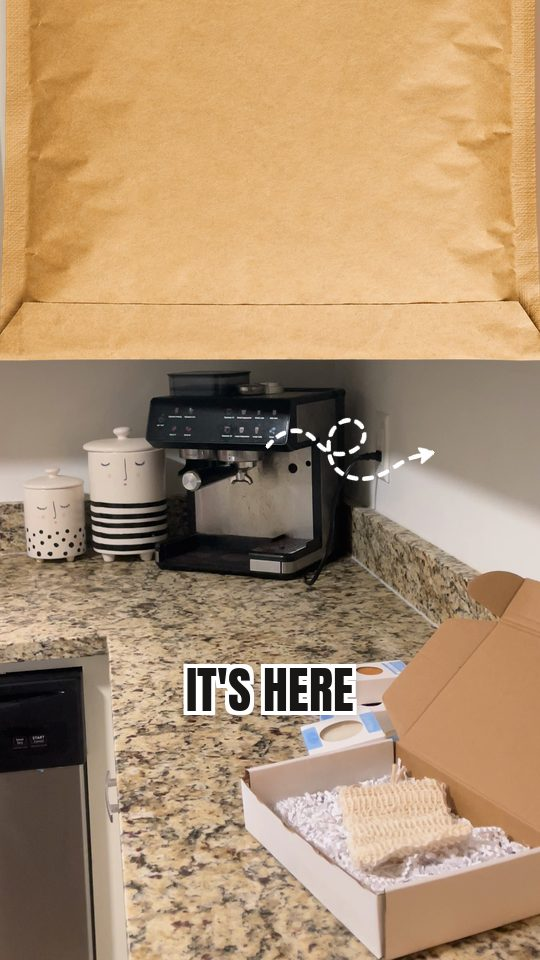
2-5s · Opening it
Footage goes: hands opening, full frame
Main action: a kraft mailer edge peels back across the top
Doodles: her dashed arrow at the tape
Carried on: the mailer edge
Transition out: the mailer tears open
Text: IT'S HERE (built-in)
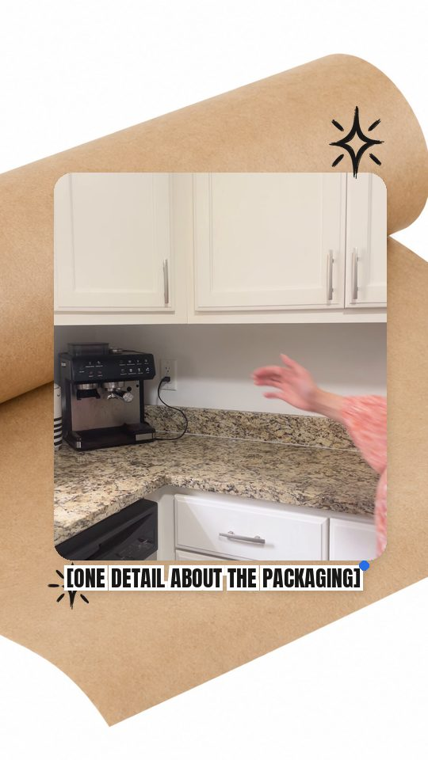
5-8s · First look (torn reveal)
Background: kraft mailer torn open
Footage goes: the first-look clip inside the tear
Main action: the tear rips open from left to right
Doodles: her sparkles
Carried on: torn kraft edge
Transition out: the mailer flips
Text: [ONE DETAIL ABOUT THE PACKAGING] (editable)
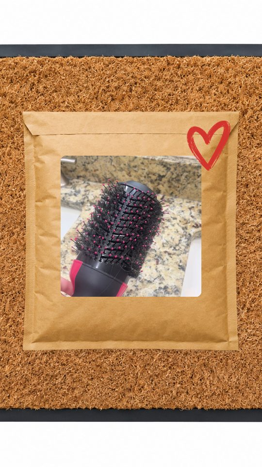
8-10s · In use, on the mailer
Background: doormat
Footage goes: the product-in-use clip on the front of a real kraft padded mailer
Main action: the mailer flips over to show the clip
Doodles: her heart doodle on the mailer
Carried on: the mailer
Transition out: the mailer slides onto the CTA
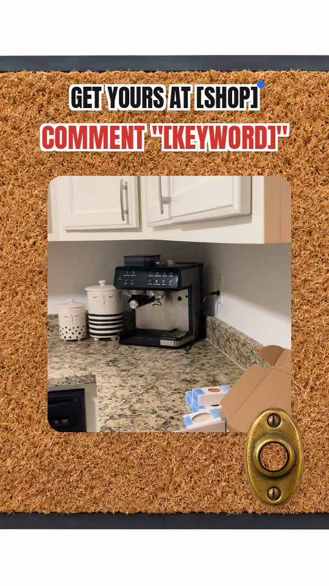
10-12s · CTA: with its packaging
Background: doormat + kraft
Footage goes: the product with its packaging, full frame card
Main action: the doorbell gives a last wiggle
Transition out: end
Text: GET YOURS AT [SHOP] (editable); COMMENT "[KEYWORD]" (built-in)
#13 How to use it in 3 steps
Job: remove the "is it hard to use?" doubt · World: the step blocks: three real wooden number cubes, a three-line recipe card, light oak, her sage zigzag · Moves: each step plays on the face of its number block, which tumbles in and grows (object replaced by footage)
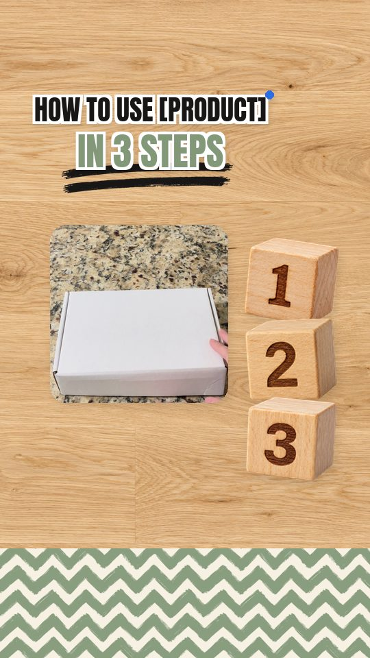
0-2s · Hook: the blocks stack
Background: light oak + a band of her sage zigzag
Footage goes: the product clip on the recipe card
Main action: three real number blocks drop and stack, one by one
Doodles: her underline under "3 steps"
Carried on: the blocks
Transition out: block 1 tumbles forward and grows
Text: HOW TO USE [PRODUCT] (editable); IN 3 STEPS (built-in)
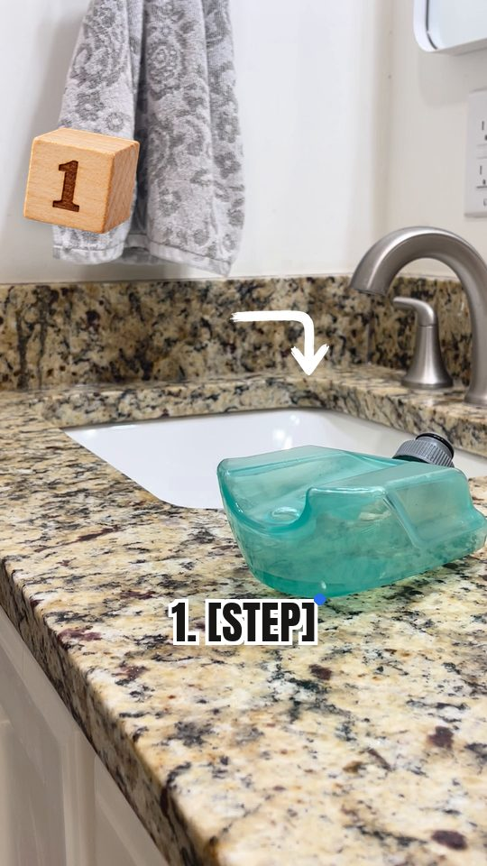
2-5.5s · Step 1 on block 1
Footage goes: step 1 full frame (it grew out of the face of block 1)
Main action: block 1 sits in the corner, its face still playing
Doodles: her arrow at the action
Carried on: block 1
Transition out: block 2 tumbles in over it
Text: 1. [STEP] (editable)
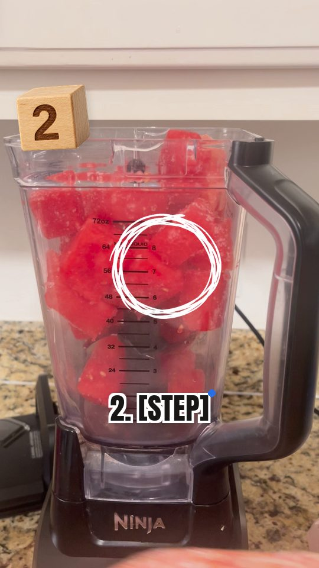
5.5-9s · Step 2
Footage goes: step 2 full frame
Main action: block 2 lands in the corner
Doodles: her circle round the detail
Carried on: blocks 1 + 2
Transition out: block 3 tumbles in
Text: 2. [STEP] (editable)
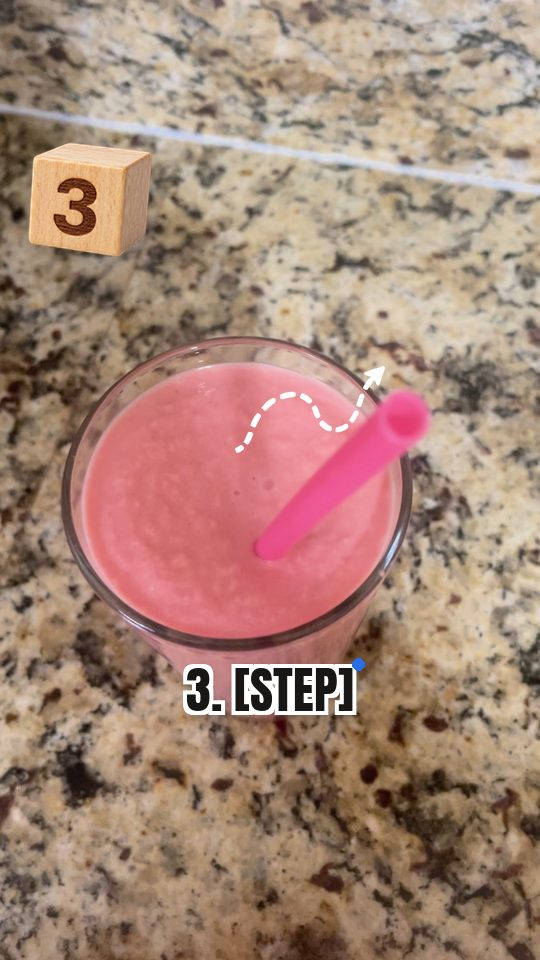
9-12.5s · Step 3
Footage goes: step 3 full frame
Main action: block 3 lands; the three stack
Doodles: her dashed arrow
Carried on: the stack
Transition out: the stack slides away to the result
Text: 3. [STEP] (editable)
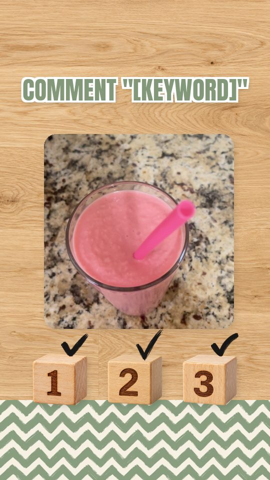
12.5-15s · CTA: the result
Background: oak + sage zigzag
Footage goes: the result clip in a photo card on the recipe card
Main action: the three blocks spell 1 2 3 along the bottom; her ticks on each
Doodles: her ticks
Transition out: end
Text: COMMENT "[KEYWORD]" (built-in)
#14 The annoying moment
Job: name a pain, then fix it · World: the junk drawer: a messy wooden drawer, a tangled cord, crumpled paper balls, crossed plasters; black-and-white for the problem, colour for the fix · Moves: B&W to colour, her scribbles as the annoyance that gets wiped away, the drawer slamming shut
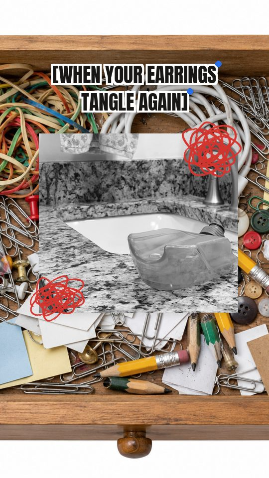
0-2s · Hook: the annoying moment
Background: the messy drawer photo
Footage goes: the annoying-moment clip in B&W inside the drawer opening
Main action: the drawer slides open
Doodles: her angry scribbles round the problem
Carried on: the scribbles
Transition out: the drawer pulls toward camera
Text: [WHEN YOUR EARRINGS (editable); TANGLE AGAIN] (editable)
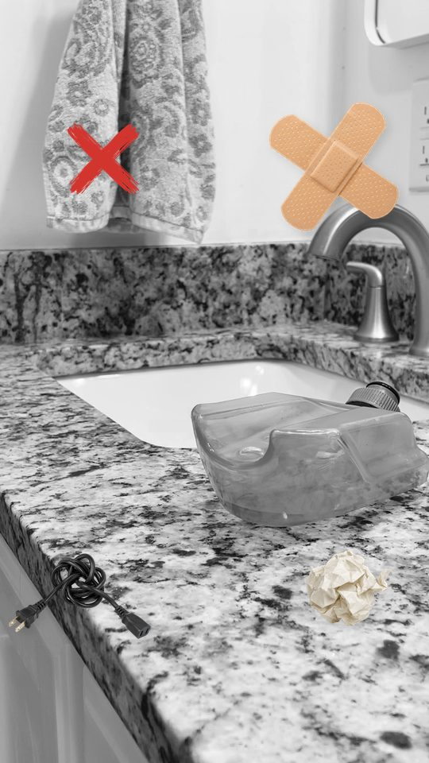
2-4s · Still annoying
Footage goes: the problem clip full frame in B&W
Main action: a real tangled cord and paper balls pile in at the edges
Doodles: her X marks
Carried on: the plasters (crossed)
Transition out: the plasters peel off and colour floods in
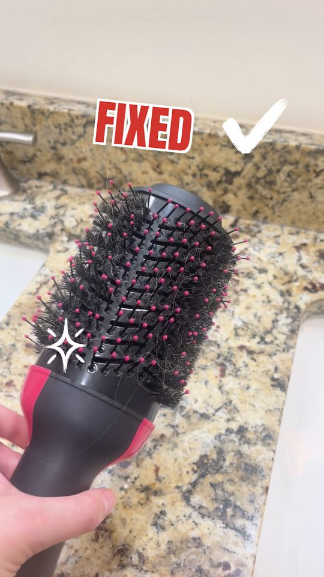
4-8s · Fixed (colour)
Footage goes: the same moment with your product, full COLOUR
Main action: colour sweeps in behind the plasters as they peel off
Doodles: her tick; her sparkles
Carried on: the cord, now neatly gone
Transition out: the drawer slams shut
Text: FIXED (built-in)
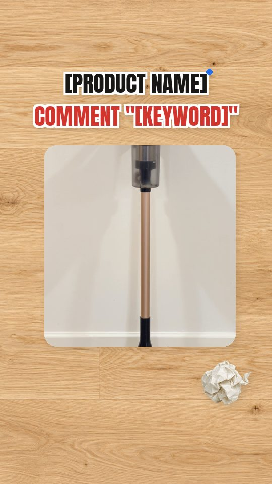
8-10s · CTA: on its own
Background: the drawer, now tidy (closed)
Footage goes: the product on its own in a photo card on the drawer front
Main action: the drawer slams; a paper ball bounces out
Job: launch a new product or restock · World: the double horizon: her paper mountain bands hanging from the top and rising from the bottom, the clip in the sky between; a disco ball drops; a gothic window for the close-ups · Moves: double skyline (mountains top + bottom), the disco ball drop, gothic window opening, rainbow arch frame
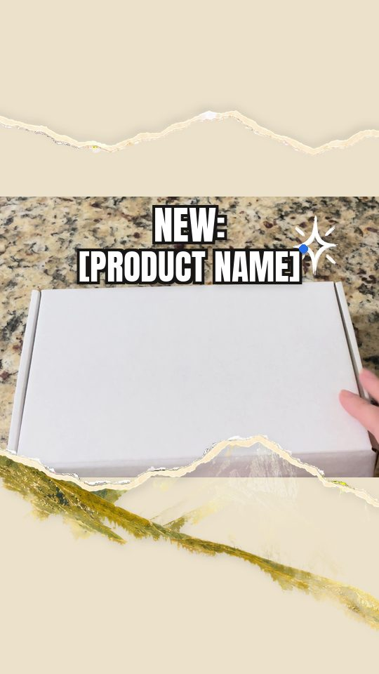
0-2s · Hook: covered, between two horizons
Background: terracotta mountains hanging upside down from the top, green ridge rising from the bottom
Footage goes: the covered product clip in the sky between
Main action: the two mountain bands close in a little (the gap narrows)
Doodles: her ? and sparkles
Carried on: the two mountain bands
Transition out: the bands part wide
Text: NEW: (built-in); [PRODUCT NAME] (editable)
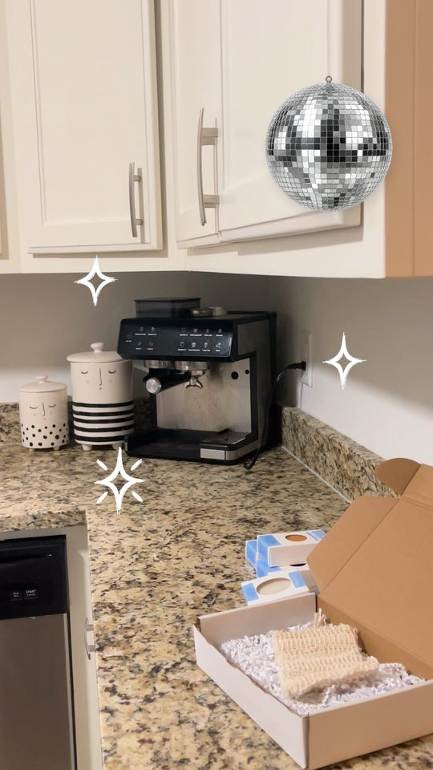
2-5s · The drop
Footage goes: the reveal clip full frame (the mountains parted off the edges)
Main action: a real disco ball DROPS in on its string and spins; light flecks swarm
Doodles: her sparkles orbit (swarm)
Carried on: the disco ball
Transition out: the ball swings across into a gothic window
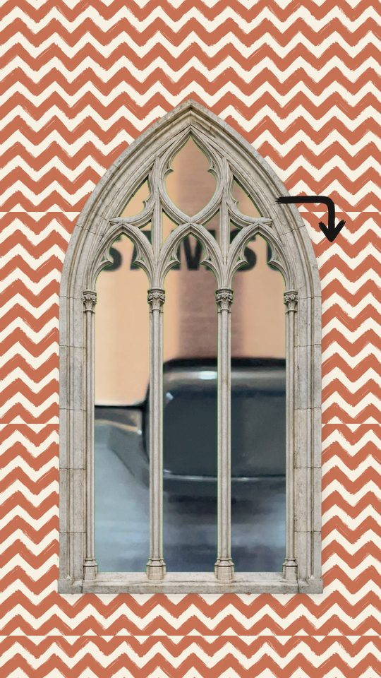
5-7s · Close-up 1: the gothic window
Background: cream paper + her terracotta zigzag
Footage goes: close-up 1 inside the real gothic green-screen window
Main action: the window frame slides up, close-up playing inside
Doodles: her arrow at the detail
Carried on: the window frame
Transition out: the window grows to full frame
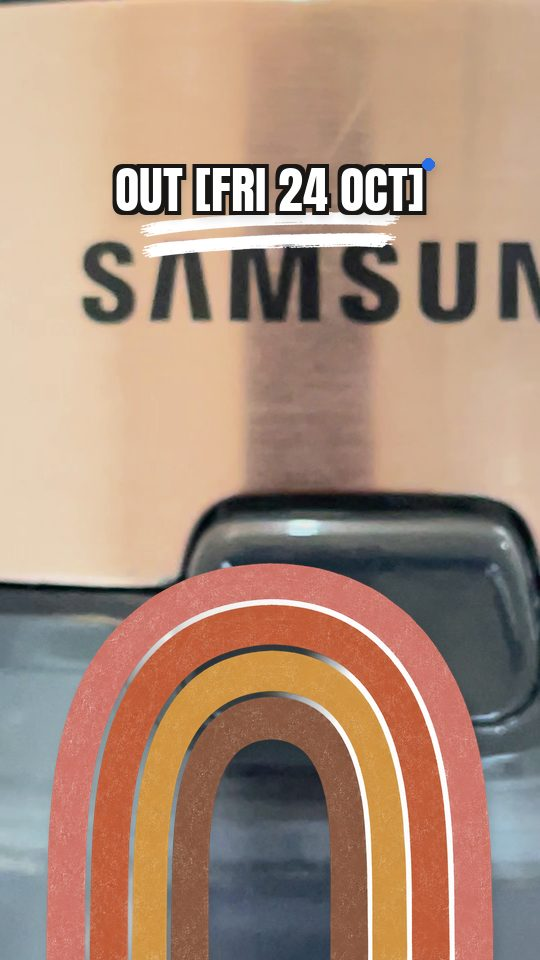
7-10s · Close-up 2 under the rainbow
Footage goes: close-up 2 full frame
Main action: a real retro rainbow arch rises behind the product
Doodles: her underline under the date
Carried on: the rainbow
Transition out: the rainbow lifts to frame the CTA
Text: OUT [FRI 24 OCT] (editable)
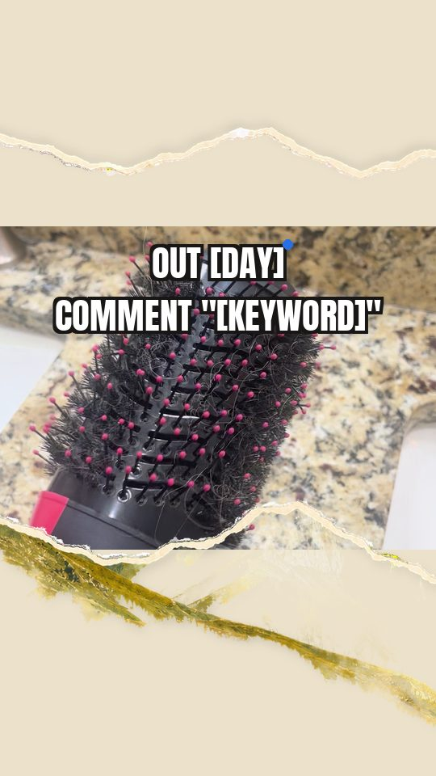
10-12s · CTA: in use, framed
Background: the two mountain bands return (top and bottom)
Footage goes: the in-use clip in the sky between
Main action: the bands close back in like a frame
Transition out: end
Text: OUT [DAY] (editable); COMMENT "[KEYWORD]" (built-in)
#16 What it feels like
Job: make people feel the texture through the screen · World: the quilt: patches of real textiles (cream cable knit, burlap, red gingham) and her patterns in grey; one touch object per word (feather, cotton, river stone) · Moves: patchwork quilt dissolving one patch at a time into the clip, a touch object with each word
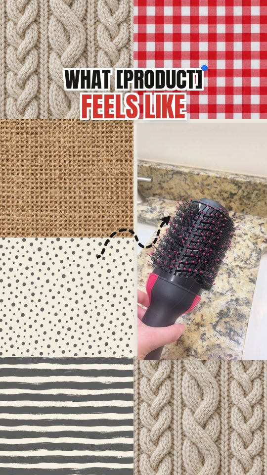
0-3s · Hook: the quilt
Background: a 3x4 quilt of real textile patches and her grey patterns
Footage goes: the squeeze clip behind the quilt
Main action: patches dissolve one at a time, showing the clip underneath
Doodles: her stitched dashed lines between patches
Carried on: the remaining patches
Transition out: the last patch goes
Text: WHAT [PRODUCT] (editable); FEELS LIKE (built-in)
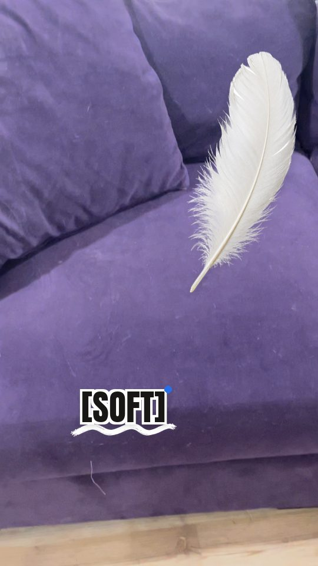
3-6s · Soft
Footage goes: the hand running across the surface, full frame
Main action: a real feather drifts across
Doodles: her wavy underline under the word
Carried on: one gingham patch in the corner
Transition out: patches flick back over as the wipe
Text: [SOFT] (editable)
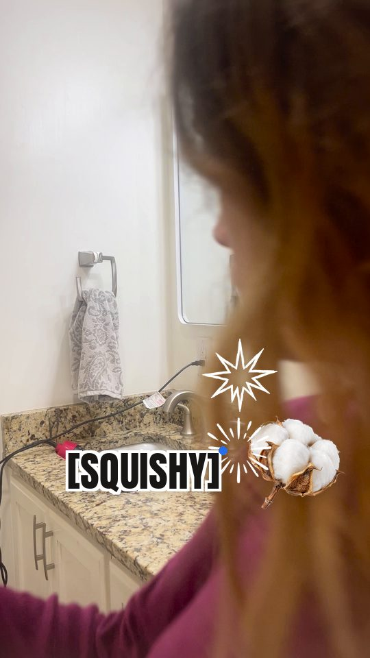
6-9s · Squishy
Footage goes: the most satisfying moment full frame
Main action: a real cotton boll squashes and springs back
Doodles: her burst on the squeeze
Carried on: the corner patch
Transition out: patch wipe
Text: [SQUISHY] (editable)
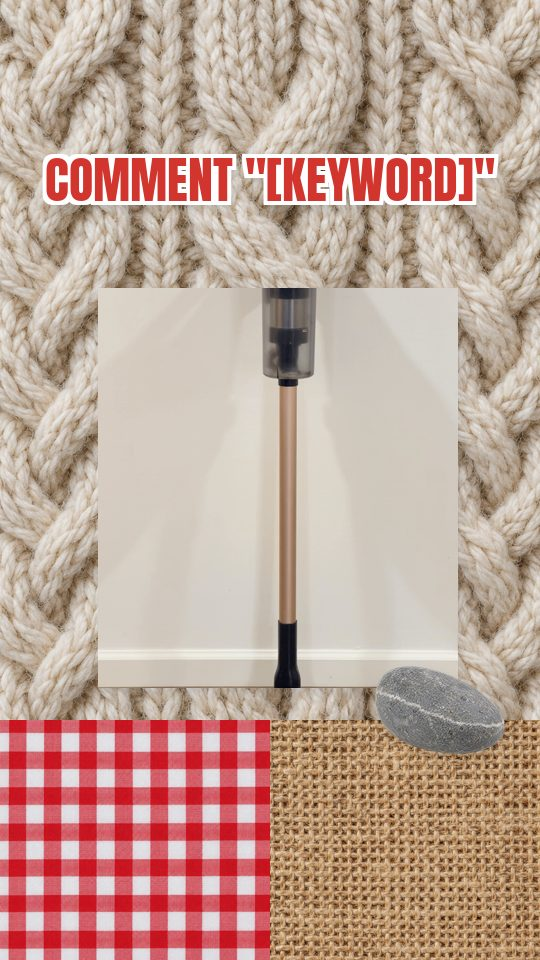
9-12s · CTA: the quilt again
Background: the quilt re-forms around the clip
Footage goes: the whole product, pulled back, in the middle patch
Main action: the patches stitch back in, one by one
Transition out: end
Text: COMMENT "[KEYWORD]" (built-in)
#17 Everything that goes into one
Job: show the value in the materials · World: the flat lay from above: a walnut serving tray, glass jars, measuring spoons, a kitchen scale, parchment squares; her mustard checks · Moves: the tray as the opening, materials landing one by one with labels, the scale needle swinging at the finish
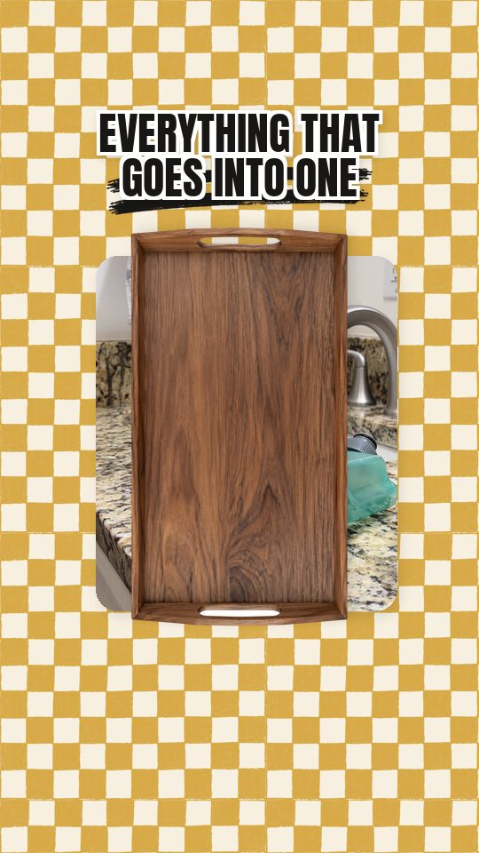
0-3s · Hook: the empty tray
Background: parchment squares + her mustard checks band
Footage goes: the empty-table clip inside the real walnut tray (from above)
Main action: the tray slides in and settles
Doodles: her underline under "everything"
Carried on: the tray
Transition out: push into the tray
Text: EVERYTHING THAT (built-in); GOES INTO ONE (built-in)
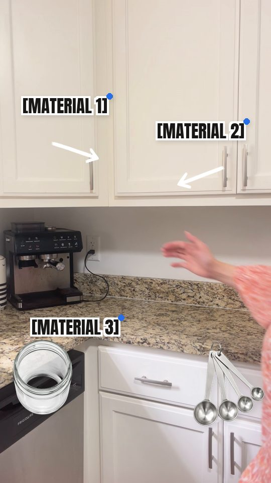
3-8s · Materials land
Footage goes: hands placing each material, full frame (one take)
Main action: a label card pops in at the edge for each material as it lands
Doodles: her arrows from each label toward the middle
Job: show expertise, then show yours passes · World: the inspection desk: a brown clipboard (the footage is the sheet), a six-box checklist pad, her tick boxes, a gold foil seal; navy + her cross pattern · Moves: the clip IS the sheet on the clipboard, a tick box ticked per check, the seal stamped at the end
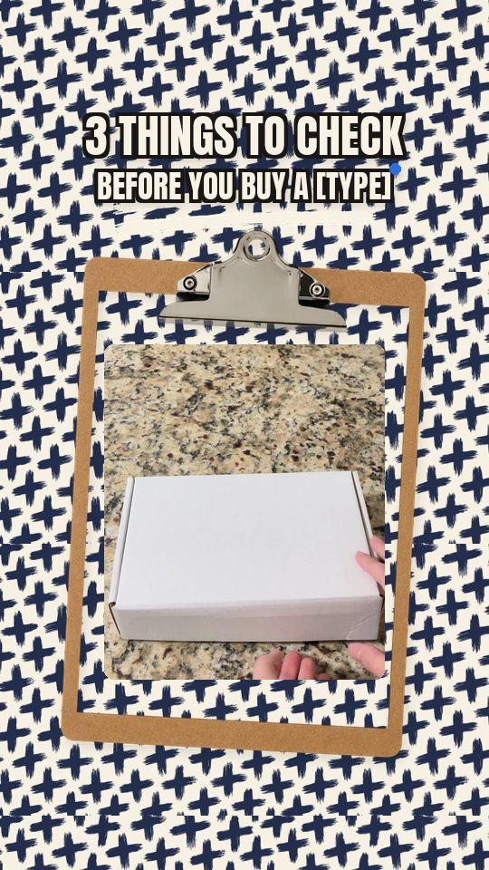
0-2s · Hook: the clipboard
Background: navy + her cream cross pattern
Footage goes: the product clip on the sheet of a real clipboard
Main action: the clipboard slides in and tilts toward camera
Doodles: her underline under "3 things"
Carried on: the clipboard
Transition out: push into the sheet
Text: 3 THINGS TO CHECK (built-in); BEFORE YOU BUY A [TYPE] (editable)
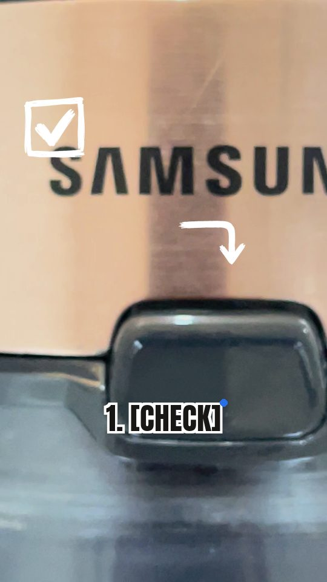
2-6s · Check 1
Footage goes: check one shown on your product, full frame
Main action: a tick box in the corner gets ticked by her marker
Doodles: her tick in the box; her arrow at the spot
Carried on: the checklist (1 ticked)
Transition out: the page flips up like a clipboard sheet
Text: 1. [CHECK] (editable)
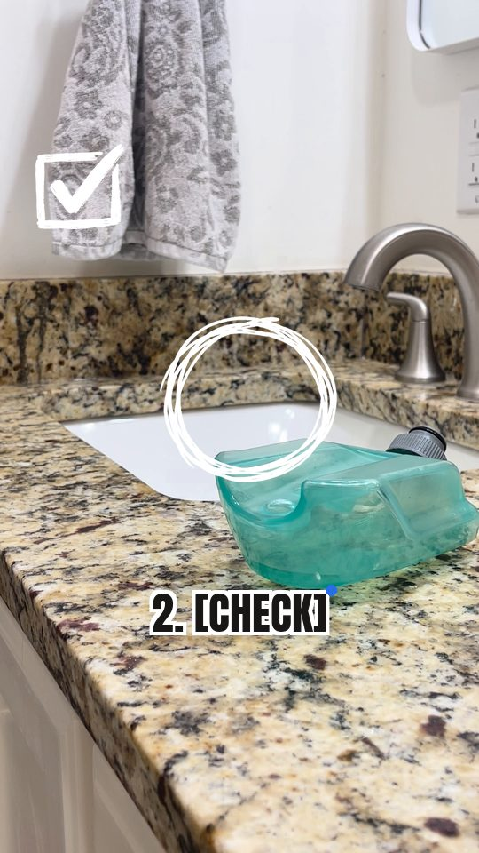
6-10s · Check 2
Footage goes: check two, full frame
Main action: the second box ticks
Doodles: her circle round the detail
Carried on: checklist (2 ticked)
Transition out: page flip
Text: 2. [CHECK] (editable)
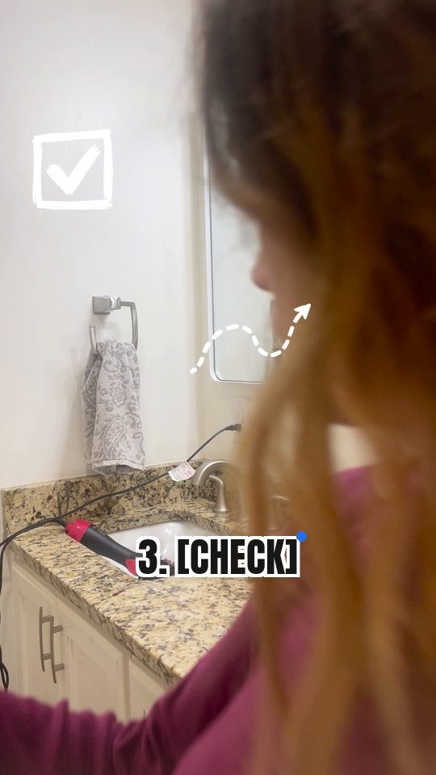
10-13s · Check 3
Footage goes: check three, full frame
Main action: the third box ticks
Doodles: her dashed arrow
Carried on: checklist (3 ticked)
Transition out: the clipboard returns
Text: 3. [CHECK] (editable)
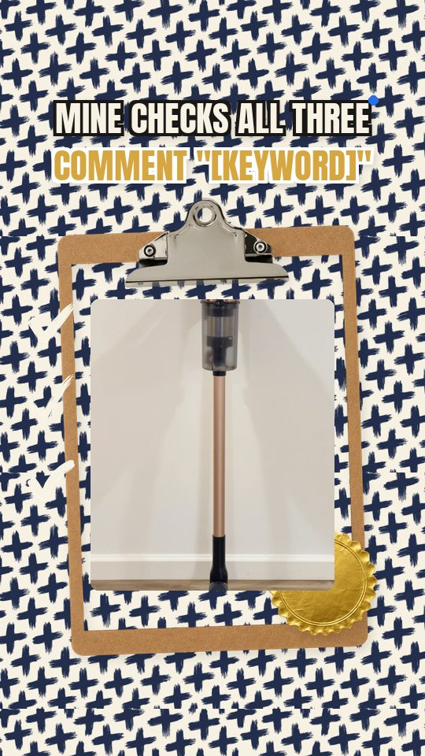
13-15s · CTA: passes all three
Background: navy cross pattern
Footage goes: your product on the clipboard sheet
Main action: a real gold foil seal stamps onto the corner
Doodles: three ticks down the side
Transition out: end
Text: MINE CHECKS ALL THREE (editable); COMMENT "[KEYWORD]" (built-in)
#19 Pair it with
Job: sell the second item (or a bundle) · World: the locket: a real open gold locket with the product in one half and the pairing in the other; a rose porcelain tea set as the "perfect pair"; burgundy and blush stripes · Moves: a locket opening onto two clips (her idea bank), the halves swapping pairings
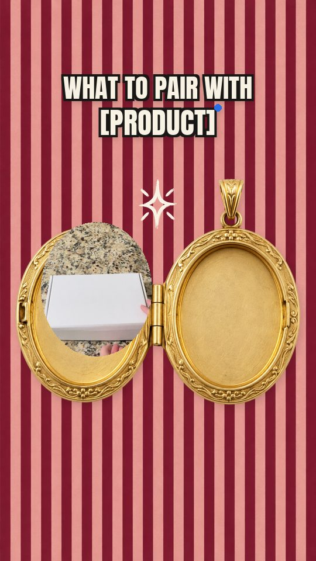
0-2s · Hook: the locket opens
Background: her stripes in burgundy and blush (her Vintage Burgundy and Blush Stripes)
Footage goes: the main product in the left half of the locket
Main action: the real gold locket swings in on its chain and opens
Doodles: her sparkles on the hinge
Carried on: the locket
Transition out: the right half fills with pairing one
Text: WHAT TO PAIR WITH (built-in); [PRODUCT] (editable)
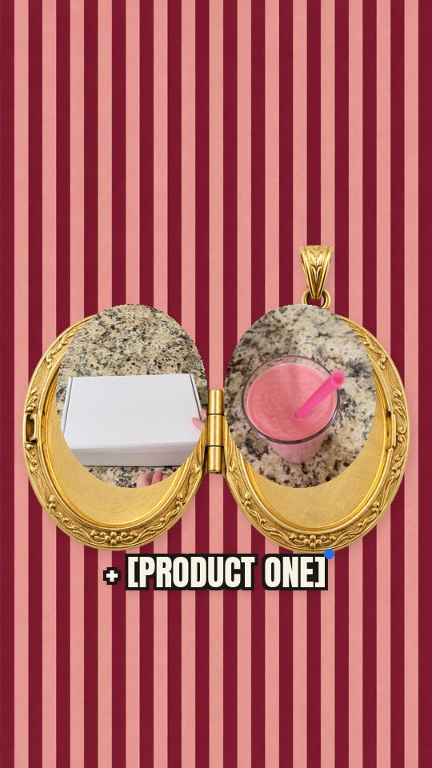
2-5s · Pairing 1
Background: burgundy stripes
Footage goes: product left, pairing one right, inside the locket
Main action: the right half lights up
Doodles: her + between the halves
Carried on: the locket
Transition out: the right half spins to pairing two
Text: + [PRODUCT ONE] (editable)
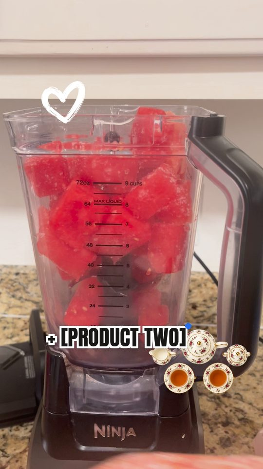
5-8s · Pairing 2 (full frame)
Footage goes: pairing two full frame (the locket half zoomed in)
Main action: a real rose tea set slides in: the classic pair
Doodles: her heart doodle
Carried on: the tea set
Transition out: zoom back out to the locket
Text: + [PRODUCT TWO] (editable)
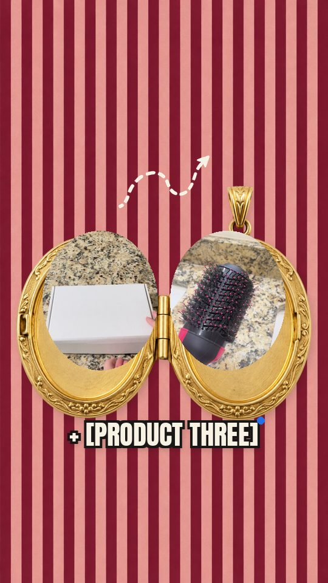
8-10s · Pairing 3
Background: stripes
Footage goes: product + pairing three in the locket halves
Main action: the locket closes and reopens with the new pair
Doodles: her dashed arrow
Carried on: the locket
Transition out: all of them gather
Text: + [PRODUCT THREE] (editable)
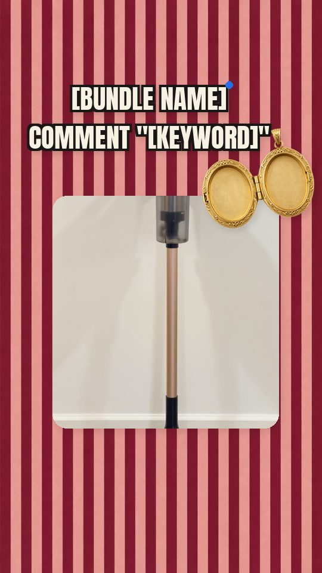
10-12s · CTA: all together
Background: stripes
Footage goes: all of them together in a photo card
Job: let real buyers sell it · World: the prize table: white marble, gold foil stars (five, then carried), the buyer's review screenshots in real phones, her speech bubbles, one gold trophy · Moves: phone screens as the windows, her speech bubble round each review, a gold star carried across, two-tone strip slice (gold / black)
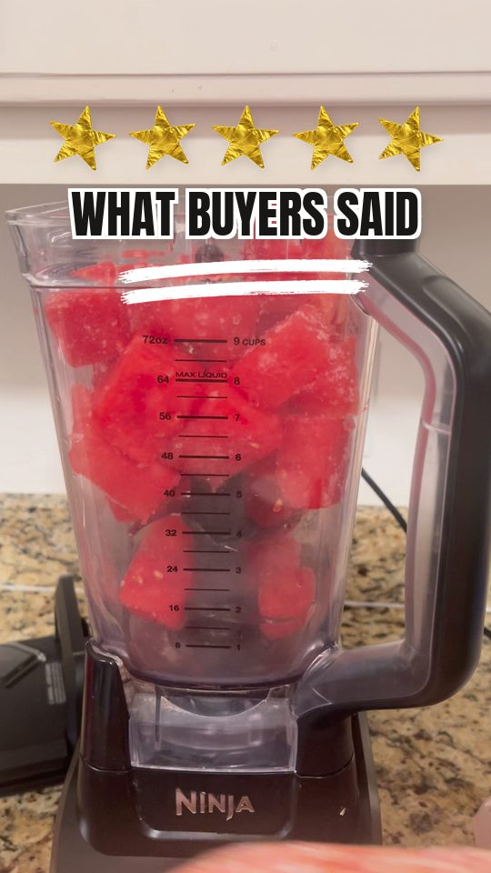
0-2s · Hook: five stars
Background: white marble + a band of her black dots
Footage goes: the product clip full frame behind
Main action: five real gold stars stick on one by one
Doodles: her underline under the title
Carried on: one gold star
Transition out: a phone slides in
Text: WHAT BUYERS SAID (built-in)
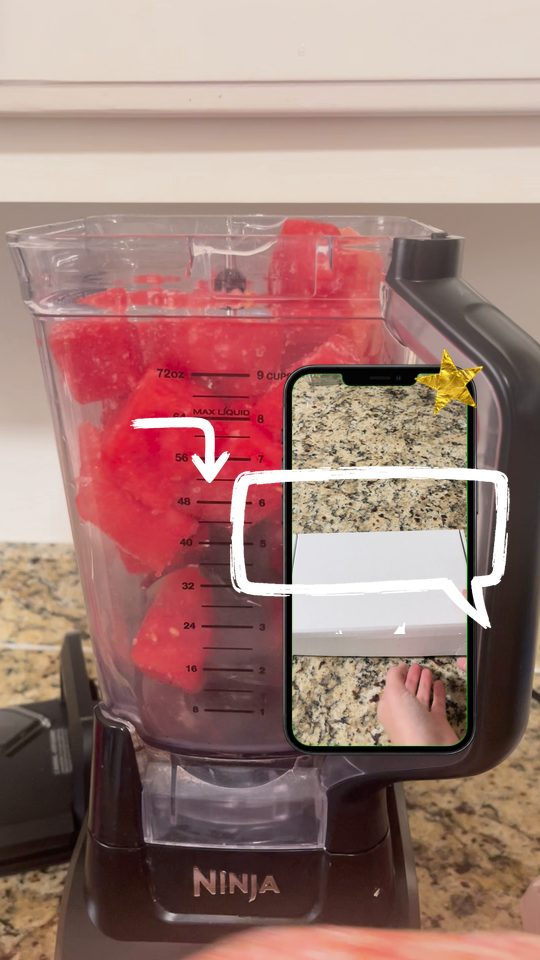
2-5s · Review 1 in a phone
Footage goes: product full frame; the review screenshot in a real phone screen
Main action: the phone slides up, her speech bubble pops round it
Doodles: her speech bubble; her arrow
Carried on: the gold star rides on the phone
Transition out: strip slice (gold / black)
5-8s · Review 2
Background: marble
Footage goes: the review in a hand-held phone (her photo), product clip behind the hand
Main action: the hand brings the phone in
Doodles: her bubble
Carried on: the gold star
Transition out: the phone screen grows into the next clip
8-10s · Review 3
Footage goes: product full frame
Main action: the review phone tilts in from the left
Doodles: her sparkles
Carried on: the gold star
Transition out: gold strips sweep to the CTA
10-12s · CTA: one trophy
Background: white marble
Footage goes: the product on its own in a photo card
Main action: one real gold trophy rises; the gold star lands on it
Transition out: end
Text: COMMENT "[KEYWORD]" (built-in)
#21 Small batch
Job: make "made in small batches" feel special and scarce · World: the bakery rack: a silver wire cooling rack as the grid over the footage, kraft hang tags counting up, parchment squares; her red stripes · Moves: the clip seen through the cooling-rack grid, tags counting up one by one, the rack lifting away
0-3s · Hook: through the rack
Background: parchment + her red stripes band
Footage goes: the whole-batch clip seen through a real wire cooling rack
Main action: the rack slides on over the clip
Doodles: her circle round the count
Carried on: the rack
Transition out: the rack slides along the batch
Text: THIS WEEK'S BATCH: (built-in); [24] [CANDLES] (editable)
3-7s · The slow pass
Footage goes: the slow pass along the batch, full frame
Main action: kraft tags count up along the bottom: 1, 2, 3 ...
Doodles: her dashed path along the row
Carried on: the row of tags
Transition out: the rack lifts away
Text: [24] MADE (editable)
7-10s · One picked up
Footage goes: one picked up, close
Main action: one tag flips to show a number (this one is No. [7])
Doodles: her burst
Carried on: that one tag
Transition out: push into the tag
Text: [ONE DETAIL ABOUT THIS BATCH] (editable)
10-12s · CTA: packed
Background: parchment squares + red stripes
Footage goes: one being packed, in a photo card on parchment
Job: show the whole range fast · World: the paint counter: white pegboard, a real paint-chip fan deck whose blades each carry an option, single chips as windows, the oak display shelf · Moves: radial wedges (the fan blades fan out, one expands into the next option), chip-shaped windows, the shelf as the CTA grid
0-1.4s · Hook: the fan opens
Background: white pegboard
Footage goes: a still of each option on the fan blades
Main action: the real fan deck fans open from its pivot
Doodles: her underline under "10 seconds"
Carried on: the fan pivot
Transition out: blade 1 expands to full frame
Text: EVERY [COLOUR] IN (editable); 10 SECONDS (built-in)
1.4-9.4s · Options 1 to 8 (1s each)
Footage goes: each option full frame; its name on a real paint chip across the bottom seam
Main action: the next blade sweeps across like a fan wipe
Doodles: her arrow at the product (alternating sides)
Carried on: the chip in the corner (changes colour each option)
Transition out: the fan wipe
Text: [OPTION 1] (editable); 1/8 (built-in)
~5s · Pause beat
Background: pegboard
Footage goes: no video: full-screen words
Main action: the words pop with the fan half-open behind
Doodles: her heart
Carried on: the fan
Transition out: the fan wipes back
Text: PAUSE ON (built-in); YOUR FAVOURITE (built-in)
9.4-12s · CTA: the shelf
Background: pegboard
Footage goes: all options together on the real oak shelf, one clip per cubby
Main action: the clips drop onto the shelves one by one
Doodles: her sparkles
Transition out: end
Text: ALL [8] AT [SHOP] (editable); COMMENT "[KEYWORD]" (built-in)
#24 Make it last
Job: care tips that make the product worth more · World: the care kit: a wooden hourglass (its two bulbs are windows), a woven care label with the tip, a sage watering can; sage + her wavy lines · Moves: the hourglass bulbs as two windows, the hourglass flips as the transition, the tip written on a real care label
0-2s · Hook: the hourglass
Background: sage + her cream wavy lines
Footage goes: the product clip in the top bulb of a real hourglass
Main action: sand runs; the hourglass turns slightly
Doodles: her underline under "longer"
Carried on: the hourglass
Transition out: the hourglass flips
Text: MAKE YOUR [PRODUCT] (editable); LAST LONGER (built-in)
2-7s · Tip, part 1
Footage goes: care tip one full frame
Main action: a real woven care label slides up with the tip on it
Doodles: her arrow at the action
Carried on: the care label
Transition out: the hourglass flips (wipe)
Text: [THE TIP, LINE ONE] (editable)
7-11s · Tip, part 2
Footage goes: care tip two full frame
Main action: the watering can tips in from the corner (for plants; swap for your care tool)
Doodles: her dashed arrow
Carried on: the care label
Transition out: flip to the result
Text: [THE TIP, LINE TWO] (editable)
11-13s · Result: both bulbs
Background: sage wavy lines
Footage goes: before in the top bulb, after in the bottom bulb
Main action: the sand finishes
Doodles: her tick by the bottom bulb
Carried on: the hourglass
Transition out: the bottom bulb grows
13-15s · CTA: at its best
Background: sage
Footage goes: the product looking its best in a photo card
Job: show why yours beats the common version · World: the weigh-in: a brass balance scale (level, then tipped your way), a plain cardboard box as "the usual kind", a brass boxing bell for each round; black + her checks · Moves: the two pans as windows, the scale tipping a little more each round, the boxing bell as the round change
0-2s · Hook: on the scale
Background: black + her cream checks band
Footage goes: yours on one pan, the usual kind on the other (round windows)
Main action: the real brass scale settles level
Doodles: her "vs" scribble between the pans
Carried on: the scale
Transition out: DING: the boxing bell
Text: [MINE] (editable); THE USUAL KIND (built-in); VS (built-in)
2-5s · Round 1
Footage goes: difference one full frame
Main action: the boxing bell rings in the corner: ROUND 1